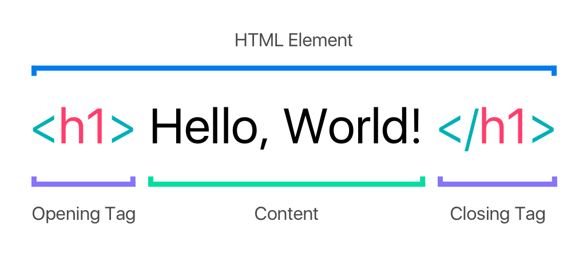
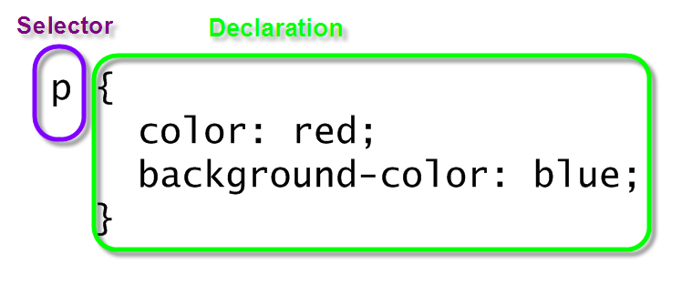

What are the best practices associated with using classes vs. ids?
Prior to digging into the best practices associated with classes and ids, lets look into what are tags and selectors.
While HTML has ‘tags’ (used to delimit the start and end of elements in the markup.) CSS has ‘selectors’.

Image 1.0: HTMl tags
Image 1.1: Css selector
And selectors are the names given to styles in internal and external style sheets (see diagram below). Selectors use the names of HTML tags and are used to change the style of a specific type of element, as you can see when having a look at the above images.

Alright, so in brief, class and Ids are selectors. And to help you in understanding one step further in the way they work, we could say that ID’s and classes are “hooks”!
"These ID’s and Classes [are] the “hooks” we need to build into markup to get our hands on them. CSS obviously needs these so that we may build selectors and do our styling, but other web languages like Javascript depend on them to them too."
- Chris Coyier -
The class selector is used to specify a style for a group of HTML elements. Unlike the id selector, the class selector is most often used on several HTML elements.This allows you to set a particular style for many HTML elements with the same class.The class selector uses the HTML class attribute, and is defined with a "."

Image 1.3: CSS class selector hooks HTMl class attribute.
The Id selector, identifies a unique element in your entire page. No other element should be declared with the same id. The css id selector is used to specify a style for a single, unique element. The css id selector uses the HTML element with the id attribute, and is defined with a "#".
"IDs are unique and beautiful snowflakes. Classes are not."
- Rob Glazebrook -

Now, that we covered how class “.” and id “#”works as CSS selectors and how they hook the respective html element attribute they want to style, let’s finally move to the best practices.
Based on the very cool fact that ID’s are unique (Each element can have only one ID, Each page can have only one element with that ID) and that classes are not (You can use the same class on multiple elements, You can use multiple classes on the same element.), special attention should be placed on how and where they are used
Another key difference in IDs vs. classes is that IDs tend to be more associated with javascript programming (i.e, a javascript function which finds a certain ID and performs an action on it, such as changing a color), while CSS is mostly associated with how your web looks like.
Having discussed all of the above in regards to classes and id's, it is time to get a step deeper in terms of best practices. The material above surely will help in making sense of the following wise advise.
1. IDs and Classes should be use only when necessary
Use them only if really necessary and there is no other possible way as in the future it will be least of a maintenance burden. Also keep in mind that Id’s have a much higher specificity than classes . Let only a cvalss, on its own cannot change styles which belong to an ID. So in other words to change an Id you will have to either us more Id’s or to use “!important” which is not the wisest thing to do as it could leas to conflicts in your stylesheet leading you to restructure your HTML. So yeah nah!
Special Note: ID’s have a special browser functionality that classes do not have. The “hash value” also known as the fingerprints for files! This is just another important reason why ID’s have to be absolutely unique. So your browser knows where to scroll and finds them!
2. Use Functional Names for your ID’s and classes
Choose to use names which would highlight the functionality of the element. For :
3. Use generic names.
If derive a name from an element’s function is not possible, or in the very case where you would introduce something only for styling purposes, using a generic; a “neutral” name is advised. Once mnore in terms of long term maintenance, will give coders less of a headache. Special note: Choose to use names “that are as short as possible but as Long as Necessary.Generally speaking, try to get to the point (nav), but don’t sacrifice comprehension (about).” Jens Oliver Meiert

I hope that this little insight on classes and ID’s have helped in clearing the hows and the whys linked to them. I would like to leave you with, what can be qualified as THE basic and essential rule to keep in mind when using CSS slectors “class” and “id”. Remember that id is used for single elements that appear only once on your page (e.g. header, footer, menu), whereas class can be used for single and/or multiple elements that appear on the page for once and/or more than once (e.g. paragraphs, links, buttons, input boxes).